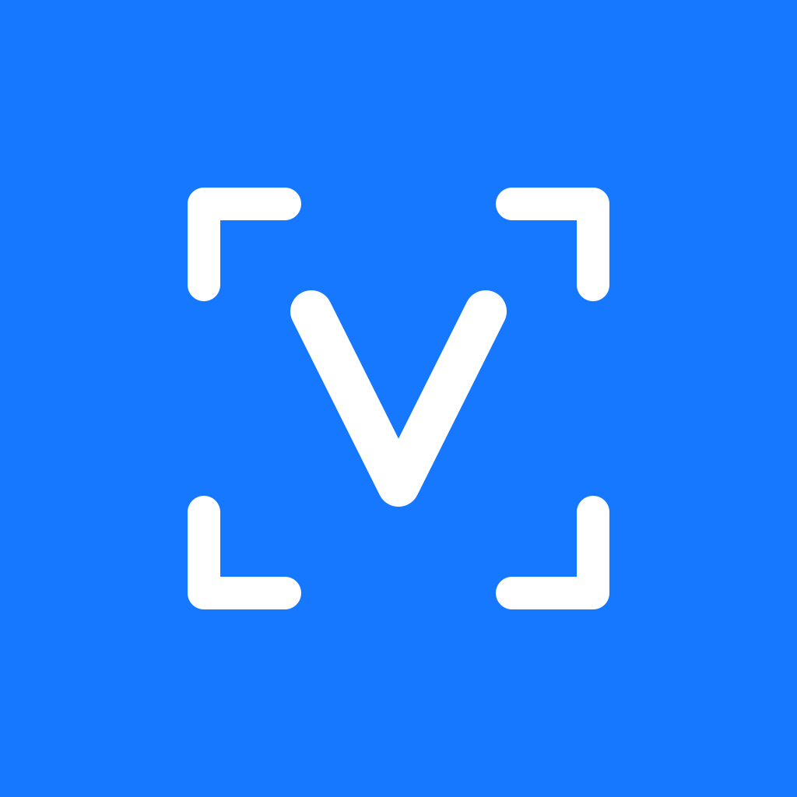
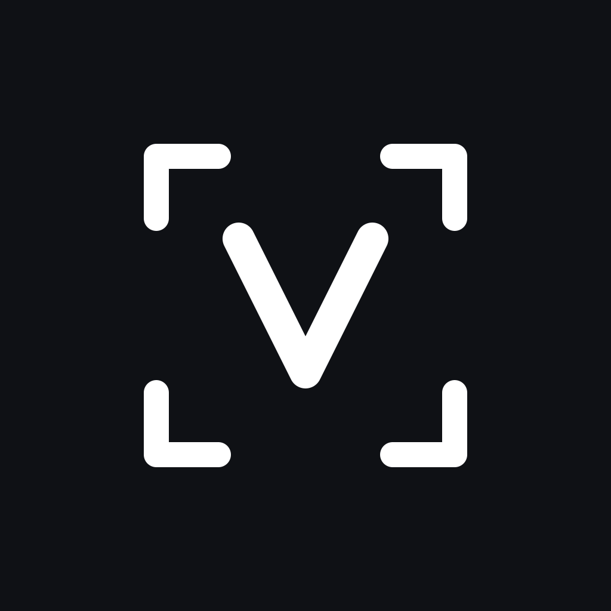
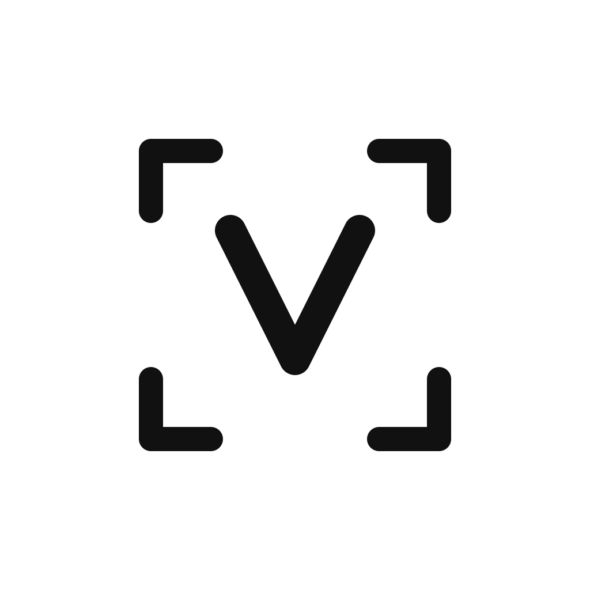

两个元素：四角取景框 = 截图，中间 V = VoxFix。单色标记，换底色即为另一套。取景框是截图与扫描的通用符号，也让图标不至于被读成「勾选框」。



图形外沿 500/1024 落在自适应安全区内，圆形与圆角方遮罩都不会切到取景框的角。
24px 时取景框线约 1.0px、V 约 1.3px，仍能读出「取景框 + V」。通知栏另有加粗实心版，不复用此图。
Android 交付为自适应图标：前景 vector（108 视口，图形按安全区缩放）、背景纯色、外加 Android 13 主题图标用的单色层。minSdk 30，无需各密度 PNG。